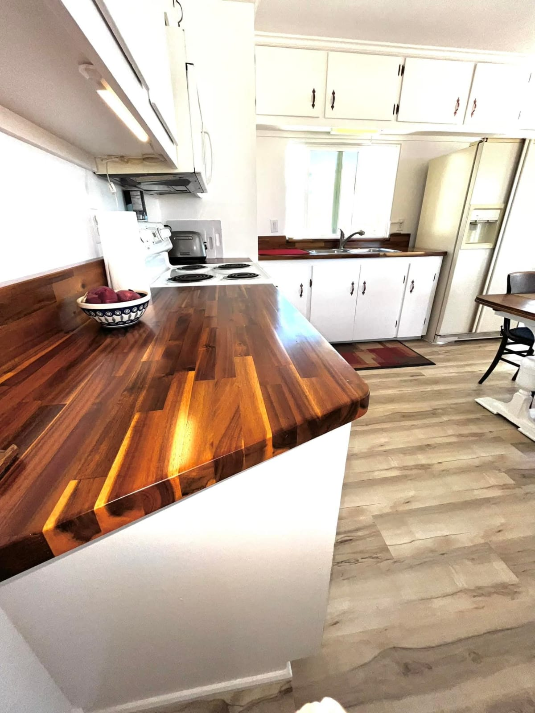
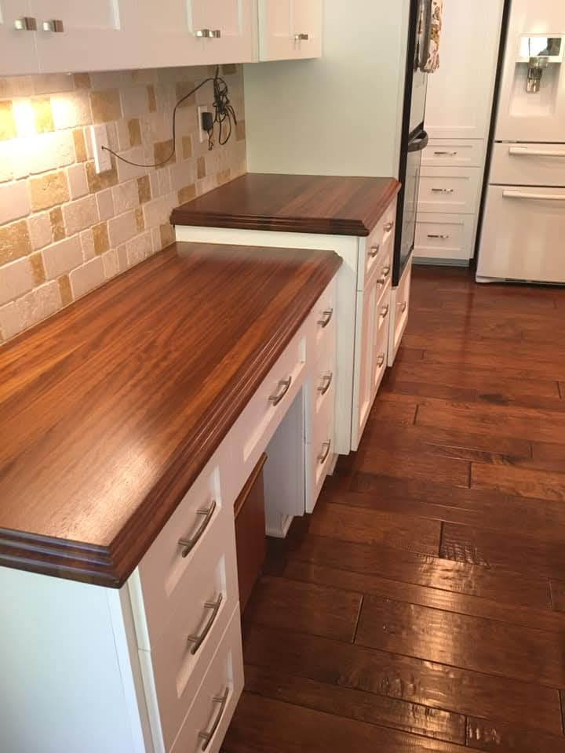
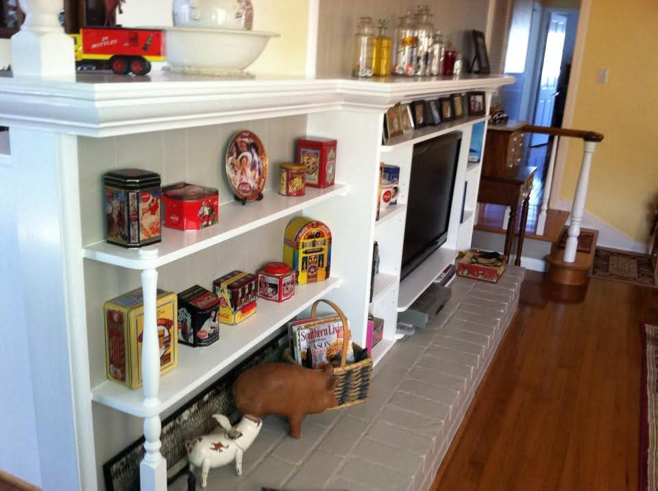
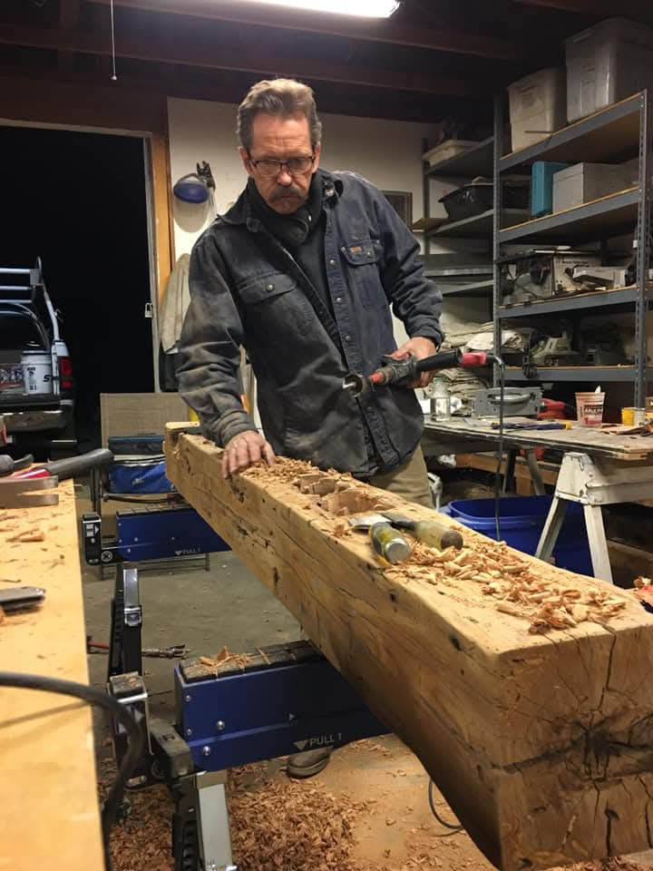

Custom Woodwork
Wood counters, tables, specialty pieces, shelves, and details that need to be measured, shaped, finished, and fitted with care.
Custom woodwork · finish carpentry · home improvements
Miller Custom Works handles custom home improvements for people who want more than a quick patch. Kitchens, built-ins, wood counters, finish details, and the kind of work that should still look right years from now.

What Mark builds
The first draft keeps the service lanes focused. Mark may be capable of a lot, but the site should lead with the work that makes him memorable.
Wood counters, tables, specialty pieces, shelves, and details that need to be measured, shaped, finished, and fitted with care.
Cabinetry, islands, counters, media walls, storage, fireplace surrounds, and the permanent pieces that make a room feel finished.
Bathrooms, doors, trim, decks, gates, fences, and practical updates where the fit, finish, and final walkthrough matter.
Featured work
These are older Facebook pulls, not the final portfolio. They are being used to shape the site, show Mark what kind of proof we need, and create a project structure worth filling in.

A first detail page built around the strongest visual lane in the photo set: wood surfaces, kitchen finish details, and handmade character.



How the site should sell him
The site should show that Mark is not selling commodity labor. He is selling judgment, patience, and the ability to make custom pieces belong in a real home.
Edges, hardware, wood grain, shelves, counters, and fireplace work should get close-up treatment instead of hiding inside generic room photos.
Custom woodwork, kitchens and built-ins, and home improvements give enough range without turning the site into a catch-all handyman menu.
A real working image does more for credibility than stock photos, badges, or over-written marketing language.
Project gallery
The Projects page is already included. Tomorrow's job is not deciding whether we need one. It is deciding which projects deserve full pages once Mark supplies the better originals.


About Mark
This is draft copy until Mark confirms the exact story. The point is to make the site feel owned by a real craftsman, not a faceless contracting template.
“The work should fit the house, hold up over time, and look like somebody cared while building it.”
Placeholder voice line. Replace with Mark's real words once he reacts to the first draft.
Start here
Send a few photos, describe what you want changed, and Mark can tell you whether it is the kind of work Miller Custom Works should look at.